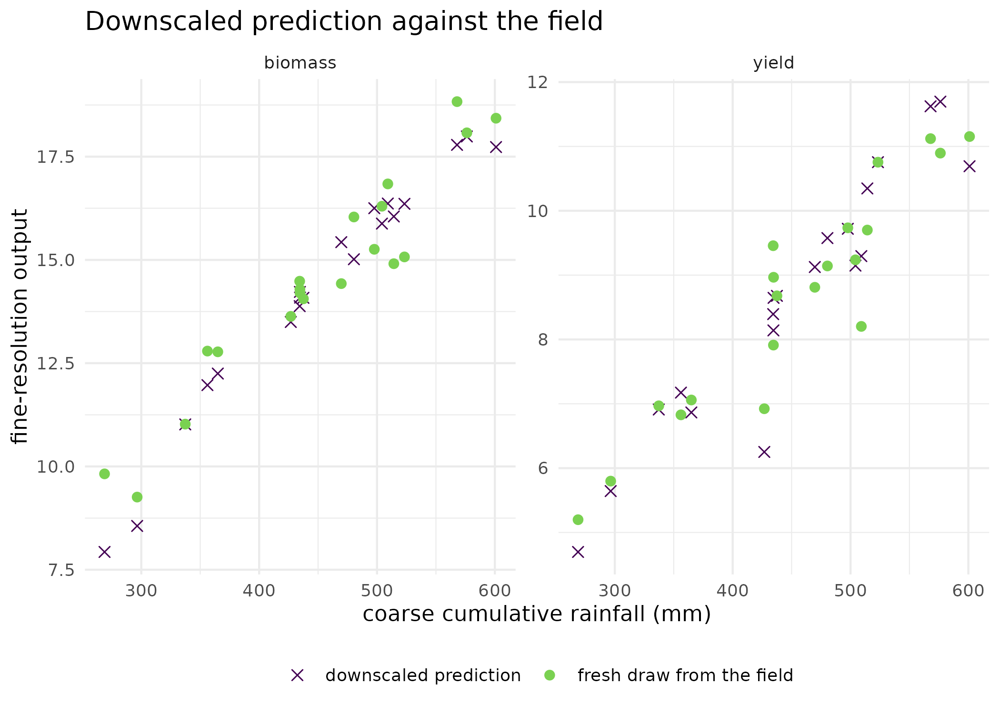

Why
An agronomist has the wrong resolution. The climate product I can get is a grid cell far larger than any paddock I manage, and the decision I have to make is about a paddock. Sometimes I have historical paddock records to learn the step down from; sometimes what I have per paddock is a bag of soil cores rather than one number; and sometimes I have no paddock data at all, only the coarse observation and the knowledge that it is an average of the paddocks inside it. Are those three the same problem? This vignette says they are three problems, gives the kernR primitive for each, and shows on synthetic data what each one needs and what it returns.
What
kernel_downscale() handles the case with paired training
data. Each training row is one coarse-resolution vector and one
fine-resolution vector, and the fit is a conditional mean embedding:
kernel ridge regression in conditional-distribution form, with the ridge
penalty chosen by leave-one-out cross-validation and the kernel
bandwidths by the median heuristic. fit_cme() exposes the
same operator at a lower level for callers who want to build on the
conditional embedding directly.
dist_regression() handles the case where the coarse
covariate is itself a bag of points rather than a vector: a
paddock’s soil cores, an ensemble of climate realisations, a set of
spectral samples. Each bag is summarised by its empirical kernel mean
embedding, and an outer kernel on those embeddings carries the
regression. outer = "linear" is the inner product of
embeddings; outer = "rbf" is a Gaussian on embedding-space
distance, and is the one to reach for when the map from embedding to
target is itself non-linear. Bags may differ in size.
aggregate_downscale() handles the case with no paired
data at all. What is available is an aggregate observation
y = T(x) + e for a known operator T –
a spatial or temporal average, a satellite footprint convolution, a
mass-balance constraint – plus a parametric prior on the fine-scale
latent x, which might come from
proxymix::fit_proxymix() fitted to historical fine-scale
data. For a linear operator the posterior is a per-component Kalman
update with reweighted mixture weights, exact in closed form; for a
non-linear operator it is importance sampling within each prior
component, with the per-component effective sample size reported as the
reliability diagnostic. posterior_sample_aggregate() draws
from the resulting mixture posterior.
Do
Paired data: coarse climate to paddock yield
A synthetic training set of 80 seasons. The coarse covariates are a mean monthly temperature and a cumulative rainfall; the fine-resolution outputs are a paddock yield, quadratic in temperature and linear in rainfall, and a biomass, linear in both.
set.seed(1L)
n_train <- 80L
coarse <- matrix(
c(rnorm(n_train, mean = 18, sd = 2),
rnorm(n_train, mean = 450, sd = 80)),
ncol = 2L, dimnames = list(NULL, c("temp", "rainfall"))
)
truth <- function(z) {
cbind(
yield = 0.02 * z[, "rainfall"] - 0.1 * (z[, "temp"] - 18)^2 +
rnorm(nrow(z), sd = 0.5),
biomass = 0.03 * z[, "rainfall"] + 0.05 * z[, "temp"] +
rnorm(nrow(z), sd = 0.7)
)
}
fine <- truth(coarse)
new_coarse <- matrix(
c(rnorm(20L, 18, 2), rnorm(20L, 450, 80)),
ncol = 2L, dimnames = list(NULL, c("temp", "rainfall"))
)
fit_raw <- kernel_downscale(coarse, fine, new_coarse)
fit_raw
#>
#> Kernel Downscaling (CME)
#>
#> Training pairs: 80
#> Prediction points: 20
#> Output dims: 2
#> Kernel (coarse): rbf (bw = 72.69)
#> Lambda (ridge): 0.0003162
head(round(fit_raw$prediction, 3L))
#> yield biomass
#> [1,] 10.187 16.110
#> [2,] 7.585 11.984
#> [3,] 9.082 15.118
#> [4,] 7.913 13.757
#> [5,] 0.823 9.937
#> [6,] 6.392 10.912The two coarse columns are on very different scales: temperature has a standard deviation of about 2 and rainfall about 80. The median heuristic resolves one bandwidth for the joint input, so on the raw scale the pairwise distances are almost entirely rainfall and the temperature response is nearly invisible to the kernel. Standardising both columns before the fit is the fix, and the comparison below is worth making explicitly because it is the most common way a conditional mean embedding underperforms in practice.
coarse_centre <- colMeans(coarse)
coarse_scale <- apply(coarse, 2L, sd)
coarse_std <- scale(coarse, center = coarse_centre, scale = coarse_scale)
new_std <- scale(new_coarse, center = coarse_centre, scale = coarse_scale)
fit_cme_paddock <- kernel_downscale(coarse_std, fine, new_std)
fit_cme_paddock
#>
#> Kernel Downscaling (CME)
#>
#> Training pairs: 80
#> Prediction points: 20
#> Output dims: 2
#> Kernel (coarse): rbf (bw = 1.64)
#> Lambda (ridge): 0.001| Output | Fit | RMSE | SD of held-out draw | Noise SD in the generator | RMSE / SD |
|---|---|---|---|---|---|
| yield | raw scale | 1.320 | 1.746 | 0.5 | 0.756 |
| biomass | raw scale | 0.688 | 2.591 | 0.7 | 0.266 |
| yield | standardised | 0.509 | 1.746 | 0.5 | 0.292 |
| biomass | standardised | 0.819 | 2.591 | 0.7 | 0.316 |
The figure: the downscaled surface against the field it came from
surface_df <- rbind(
data.frame(
rainfall = new_coarse[, "rainfall"],
value = fit_cme_paddock$prediction[, "yield"],
output = "yield", source = "downscaled prediction"
),
data.frame(
rainfall = new_coarse[, "rainfall"], value = new_truth[, "yield"],
output = "yield", source = "fresh draw from the field"
),
data.frame(
rainfall = new_coarse[, "rainfall"],
value = fit_cme_paddock$prediction[, "biomass"],
output = "biomass", source = "downscaled prediction"
),
data.frame(
rainfall = new_coarse[, "rainfall"], value = new_truth[, "biomass"],
output = "biomass", source = "fresh draw from the field"
)
)
ggplot2::ggplot(
surface_df,
ggplot2::aes(x = rainfall, y = value, colour = source, shape = source)
) +
ggplot2::geom_point(size = 2.2) +
ggplot2::facet_wrap(~output, scales = "free_y") +
ggplot2::scale_colour_viridis_d(name = NULL, end = 0.8) +
ggplot2::scale_shape_manual(name = NULL, values = c(4L, 16L)) +
ggplot2::labs(
x = "coarse cumulative rainfall (mm)",
y = "fine-resolution output",
title = "Downscaled prediction against the field"
) +
ggplot2::theme_minimal() +
ggplot2::theme(legend.position = "bottom")
Downscaled prediction against the coarse rainfall input at the 20 held-out points (line and points), with a fresh draw from the generating process at the same points for comparison (crosses). The conditional mean embedding recovers the rainfall response in both outputs; the vertical scatter of the crosses around the line is the noise the fit is not trying to reproduce.
Bags of points: distribution regression
The simplest illustrative target: recover the mean of a distribution from a finite sample of it. Sixty synthetic bags, forty points each.
set.seed(2L)
n_bags <- 60L
mu_train <- runif(n_bags, -3, 3)
bags_train <- lapply(mu_train, function(m1) {
matrix(rnorm(40L, mean = m1, sd = 1), ncol = 1L)
})
fit_dr <- dist_regression(bags_train, y = mu_train, outer = "linear")
fit_dr
#>
#> Kernel Distribution Regression
#>
#> Training bags: 60
#> Bag sizes: 40-40 (median 40)
#> Point dim: 1
#> Output dim: 1
#> Inner kernel: rbf (bw = 2.149)
#> Outer kernel: linear
#> Ridge lambda: 3.162e-05
n_new <- 10L
mu_new <- runif(n_new, -3, 3)
bags_new <- lapply(mu_new, function(m1) {
matrix(rnorm(40L, mean = m1, sd = 1), ncol = 1L)
})
pred_dr <- predict(fit_dr, bags_new)| True bag mean | Prediction | Absolute error |
|---|---|---|
| 2.396 | 2.365 | 0.031 |
| 2.816 | 2.651 | 0.165 |
| 2.864 | 3.403 | 0.539 |
| 2.202 | 2.133 | 0.069 |
| 2.604 | 2.239 | 0.365 |
| -0.079 | 0.162 | 0.241 |
| 1.156 | 1.152 | 0.004 |
| -1.846 | -1.800 | 0.046 |
| -1.586 | -1.695 | 0.109 |
| 0.175 | 0.210 | 0.035 |
Targets may be vectors as well as scalars, one column per bag-level quantity.
y_mat <- cbind(mean = mu_train, mean_sq = mu_train^2)
fit_mv <- dist_regression(bags_train, y = y_mat, outer = "linear")
round(predict(fit_mv, bags_new[1:3]), 3L)
#> mean mean_sq
#> [1,] 2.374 5.762
#> [2,] 2.627 6.990
#> [3,] 3.286 10.461Choosing the outer kernel
The outer kernel governs the regression on embedding space, not what the embedding can represent. The synthetic bags below are all centred at zero and differ only in their spread, so the target is a property of the bag that no bag mean carries, and the two outer kernels can be compared on it directly.
set.seed(3L)
sd_train <- runif(n_bags, 0.5, 2.5)
bags_var <- lapply(sd_train, function(s1) {
matrix(rnorm(60L, mean = 0, sd = s1), ncol = 1L)
})
fit_linear <- dist_regression(bags_var, y = sd_train, outer = "linear")
fit_rbf <- dist_regression(bags_var, y = sd_train, outer = "rbf")
sd_new <- runif(30L, 0.5, 2.5)
bags_sd_new <- lapply(sd_new, function(s1) {
matrix(rnorm(60L, mean = 0, sd = s1), ncol = 1L)
})
rmse_outer <- c(
linear = sqrt(mean((predict(fit_linear, bags_sd_new) - sd_new)^2)),
rbf = sqrt(mean((predict(fit_rbf, bags_sd_new) - sd_new)^2)),
spread_of_target = sd(sd_new)
)
round(rmse_outer, 3L)
#> linear rbf spread_of_target
#> 0.179 0.180 0.577Bag sizes may differ across the design, which is what a set of paddocks with different numbers of soil cores looks like; the double-sum embedding averages over the inner Gram matrix, so nothing needs padding.
No paired data: inverting a known aggregator
Two adjacent paddocks are observed only through their spatial
average. The prior on the pair is a synthetic two-component Gaussian
mixture, one component near the origin and one near (2, 2),
and the observation points at the second.
agg_matrix <- matrix(c(0.5, 0.5), nrow = 1L)
latent_prior <- list(
means = list(c(0, 0), c(2, 2)),
covariances = list(diag(2L), diag(2L)),
weights = c(0.5, 0.5)
)
fit_agg_lin <- aggregate_downscale(
y = 1.8, aggregator = agg_matrix, latent_prior = latent_prior,
sigma_y = 0.15
)
fit_agg_lin
#> Aggregate-likelihood downscaling
#> method: linear_closed_form (linear)
#> components: 2
#> sigma_y: 0.15
#> posterior mean: 1.8, 1.8
#> posterior wts: 0.045, 0.955A non-linear aggregator, standing in for a sensor whose response saturates, is handled by importance sampling within each prior component.
agg_fn <- function(x) matrix(sin(rowSums(x)), ncol = 1L)
fit_agg_nl <- aggregate_downscale(
y = 0.5, aggregator = agg_fn, latent_prior = latent_prior,
sigma_y = 0.1, n_samples_per_component = 400L, seed = 1L
)
round(fit_agg_nl$ess_per_component, 1L)
#> [1] 53.5 42.5
round(fit_agg_nl$posterior_mean, 3L)
#> [1] 0.960 0.898
fit_agg_nl$ess_warning
#> [1] FALSE
samples_agg <- posterior_sample_aggregate(fit_agg_nl, n = 500L,
seed = 2L)
round(head(samples_agg, 3L), 3L)
#> [,1] [,2]
#> [1,] 0.665 1.317
#> [2,] -0.286 0.978
#> [3,] 1.496 2.637The three primitives side by side
| Aspect | kernel_downscale() | dist_regression() | aggregate_downscale() |
|---|---|---|---|
| Training data | paired coarse and fine | bags plus bag-level targets | none paired, aggregate only |
| Coarse-to-fine map | learned by regression | learned by regression | known operator |
| Latent prior | implicit, empirical | implicit, empirical | explicit, parametric mixture |
| Closed form | yes | yes | yes for a linear operator, importance sampling otherwise |
| Multi-output | yes | yes | yes |
| Uncertainty returned | point plus ridge interval | point plus ridge interval | full mixture posterior |
Read
The input scale matters more than anything else in this fit. On the raw scale the conditional mean embedding predicts yield at the 20 held-out coarse points with a root mean squared error of 1.32, which is 76 per cent of the spread of the held-out values and far above the irreducible floor of 0.5 that the generator’s own noise sets. Standardising the two coarse columns first brings it to 0.509, essentially the noise floor: the fit now recovers the yield response as well as anyone could. Biomass moves the other way by a smaller amount, from 0.688 to 0.819 against its own noise floor of 0.7, because biomass depends on rainfall much more strongly than on temperature and the raw-scale bandwidth was already tuned to rainfall. The single shared bandwidth is what forces the trade: it is the reason to standardise, and the reason a per-column bandwidth would be the better tool if one output needed a different resolution from another. The ridge penalty chosen by leave-one-out on the standardised fit was 1.00e-03. The figure shows the standardised fit as a surface rather than a number: the predictions trace the rainfall response cleanly in both outputs, and the crosses scatter around them by roughly the noise that was put in.
Distribution regression recovers the bag means it was asked for: across the 10 fresh bags the mean absolute error is 0.16 on bag means spanning -1.85 to 2.86, and the largest single error is 0.539.
The spread-only bags settle what the outer kernel does and does not do. Both outer kernels recover the bag standard deviation well: the linear one gives a root mean squared error of 0.179 and the Gaussian one 0.18, against a target spread of 0.577, so on this design the two are indistinguishable. That is worth stating plainly, because the natural expectation is the opposite. A linear outer kernel is not a linear model of the bag: the inner RBF kernel embeds each bag as a function, and a bag with a wider spread has a visibly different embedding from a narrow one at the same mean, so the higher moment is already carried before the outer kernel sees anything. The outer kernel chooses how the regression behaves on embedding space, and the Gaussian one earns its keep when that relationship is itself non-linear, not merely when the target is a higher moment.
The linear aggregate inversion moves the posterior weight where the
observation points. The prior gave the two components weights of 0.5 and
0.5; after observing an average of 1.8 with a noise standard deviation
of 0.15, the posterior weights are 0.045 and 0.955, and the posterior
mean is 1.8, 1.8, close to the (2, 2) component the
observation is consistent with. The non-linear inversion is where the
reliability diagnostic earns its place: its per-component effective
sample sizes are 53.5 and 42.5 out of 400 importance draws each, and
ess_warning is FALSE. A collapsed effective sample size
there means the posterior is being carried by a handful of draws and
should be read as exploratory rather than as a result.
Limits
Every dataset here is synthetic, with the generating process known
and the coarse-to-fine relationship smooth; a real downscaling problem
has covariate shift between the training seasons and the season to be
predicted, which none of these primitives detects.
kernel_downscale() returns a conditional mean, not
a conditional distribution, so it gives a point prediction with a ridge
interval and cannot answer a question about the fine-scale tail; the
closed-form solve costs order n^3 at training time, which
bounds the training set well before the prediction step becomes the
constraint. dist_regression() assumes the bags are samples
from the distributions of interest, so a bag that is systematically
sampled – the cores taken from the accessible corner of the paddock –
biases the embedding with no diagnostic to say so.
aggregate_downscale() requires the aggregator to be
known, and its answer is only as good as the latent prior it
inverts: a prior that excludes the truth returns a confident posterior
in the wrong place. The per-component effective sample size on the
non-linear path is the one reliability gate in this vignette, and it
detects importance-sampling collapse, not prior misspecification.
Notes on practice
Sizing a conditional mean embedding. Both training
and prediction inputs must have the same coarse-resolution shape, one
vector per row. The closed-form ridge solve costs order n^3
at training time and predicts in order n_new times
n_train, so the training set is the binding constraint;
standardise the input columns before fitting unless they are already on
a common scale.
Sizing a distribution regression. Tens to hundreds
of points per bag and tens to low thousands of bags is the range this
construction is built for. The inner Gram matrices cost order
M^2 times the square of the mean bag size, where
M is the number of bags, so bag size is the more expensive
of the two dimensions.
Sizing an aggregate inversion. The linear path costs
order N times the cube of the latent dimension plus the
cube of the observation dimension, for N prior components.
The non-linear path costs order N times the draws per
component times the sum of the two dimensions, and its
n_samples_per_component should be raised until the
per-component effective sample sizes are a workable fraction of it.
Reproducibility. The non-linear aggregate path and
posterior_sample_aggregate() are randomised; pass
seed to both.
What to read next
Which parameters are worth calibrating? and Did the
management change shift the simulated distribution? cover the
calibration step that usually produces the ensemble a latent prior is
fitted to. Choosing a density-ratio backend describes the
proxymix binding, whose fit_proxymix() is the canonical
fitter for the Gaussian-mixture prior aggregate_downscale()
inverts. Scaling HSIC to large ensembles covers the low-rank
factorisations that would be the route to a conditional mean embedding
on a training set too large for an exact solve.
References
- Muandet, K., Fukumizu, K., Sriperumbudur, B., & Scholkopf, B. (2017). Kernel mean embedding of distributions: a review and beyond. Foundations and Trends in Machine Learning, 10(1-2), 1-141.
- Park, J., Muandet, K., Fukumizu, K., & Sejdinovic, D. (2013). Kernel embeddings of conditional distributions. IEEE Signal Processing Magazine, 30(4), 98-111.
- Szabo, Z., Sriperumbudur, B. K., Poczos, B., & Gretton, A. (2016). Learning theory for distribution regression. Journal of Machine Learning Research, 17(152), 1-40.
Reproduce
Seeds 1 (paired climate toy), 2 (bags for
the mean target), 3 (spread-only bags), 4
(variable-size bags), and seed = 1L and
seed = 2L for the importance sampler and the posterior
draw. Package versions follow.
sessionInfo()
#> R version 4.6.1 (2026-06-24)
#> Platform: x86_64-pc-linux-gnu
#> Running under: Ubuntu 24.04.5 LTS
#>
#> Matrix products: default
#> BLAS: /usr/lib/x86_64-linux-gnu/openblas-pthread/libblas.so.3
#> LAPACK: /usr/lib/x86_64-linux-gnu/openblas-pthread/libopenblasp-r0.3.26.so; LAPACK version 3.12.0
#>
#> locale:
#> [1] LC_CTYPE=C.UTF-8 LC_NUMERIC=C LC_TIME=C.UTF-8
#> [4] LC_COLLATE=C.UTF-8 LC_MONETARY=C.UTF-8 LC_MESSAGES=C.UTF-8
#> [7] LC_PAPER=C.UTF-8 LC_NAME=C LC_ADDRESS=C
#> [10] LC_TELEPHONE=C LC_MEASUREMENT=C.UTF-8 LC_IDENTIFICATION=C
#>
#> time zone: UTC
#> tzcode source: system (glibc)
#>
#> attached base packages:
#> [1] stats graphics grDevices utils datasets methods base
#>
#> other attached packages:
#> [1] kernR_0.8.2
#>
#> loaded via a namespace (and not attached):
#> [1] vctrs_0.7.3 cli_3.6.6 knitr_1.52
#> [4] rlang_1.3.0 xfun_0.60 otel_0.2.0
#> [7] generics_0.1.4 S7_0.2.2 textshaping_1.0.5
#> [10] data.table_1.18.6.1 jsonlite_2.0.0 labeling_0.4.3
#> [13] glue_1.8.1 htmltools_0.5.9 PESTO_0.10.1
#> [16] ragg_1.5.2 sass_0.4.10 scales_1.4.0
#> [19] rmarkdown_2.32 grid_4.6.1 evaluate_1.0.5
#> [22] jquerylib_0.1.4 fastmap_1.2.0 yaml_2.3.12
#> [25] lifecycle_1.0.5 compiler_4.6.1 RColorBrewer_1.1-3
#> [28] fs_2.1.0 Rcpp_1.1.2 farver_2.1.2
#> [31] systemfonts_1.3.2 digest_0.6.39 viridisLite_0.4.3
#> [34] R6_2.6.1 bslib_0.12.0 withr_3.0.3
#> [37] tools_4.6.1 gtable_0.3.6 pkgdown_2.2.1
#> [40] ggplot2_4.0.3 cachem_1.1.0 desc_1.4.3